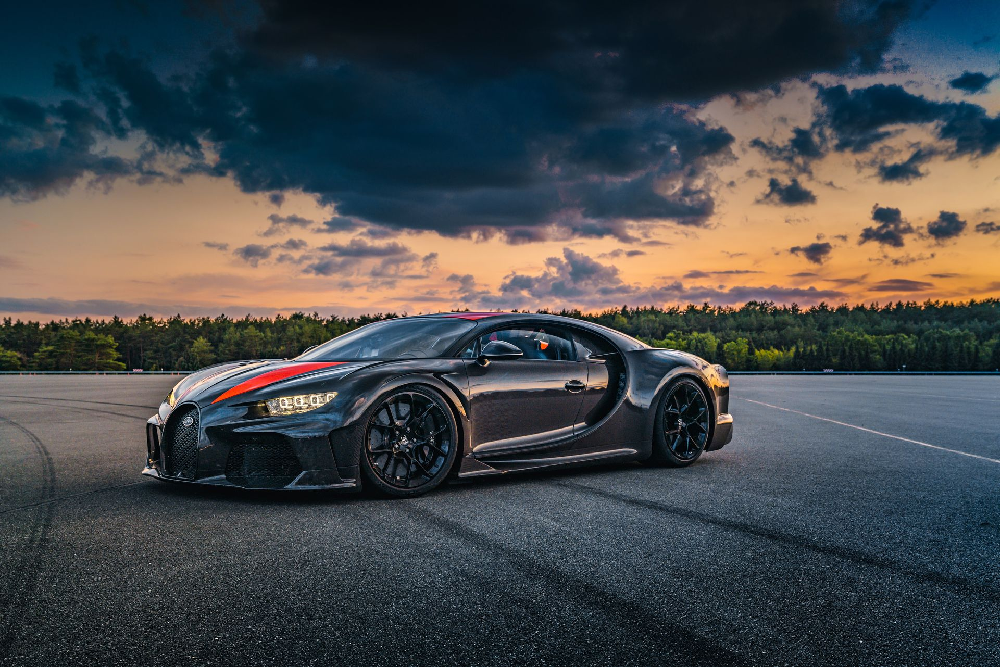

Introduction to Cars
Cars are one of the most significant inventions in human history. They have revolutionized the way we travel, work, and live. A car, also known as an automobile, is a wheeled motor vehicle used for transportation.
Most cars are designed to run primarily on roads, have seating for one to eight people, and typically have four wheels. They are powered by internal combustion engines, electric motors, or a combination of both.
History of Cars
The history of cars dates back to the late 19th century. The first practical automobile was invented by Karl Benz in 1885. His vehicle, the Benz Patent-Motorwagen, is considered the first true automobile.
Over the years, cars have evolved significantly. From the early steam-powered vehicles to the modern electric and hybrid cars, the automotive industry has come a long way.

Types of Cars
There are various types of cars available today, each designed for different purposes and preferences. Some of the most common types include:
- Sedans: These are the most common type of cars, known for their enclosed cabins and separate trunks.
- SUVs (Sport Utility Vehicles): These vehicles are larger and are designed for off-road capabilities and spacious interiors.
- Electric Cars: These cars are powered by electric motors and are becoming increasingly popular due to their environmental benefits.
- The world's first speeding ticket was issued in 1902.
- The average car has about 30,000 parts.
- The fastest car in the world is the Bugatti Chiron Super Sport 300+, which can reach speeds of over 300 mph. 
Interesting Facts About Cars
Here are some fascinating facts about cars:
Learn More About Cars
If you want to explore more about cars, visit History of Automobiles for a comprehensive overview.